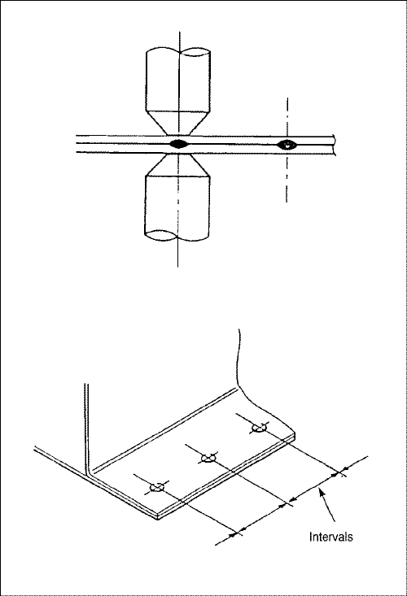
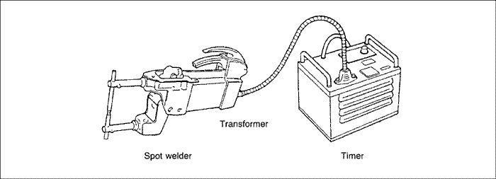
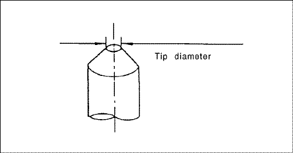

SOLDADURA Y HERRAMIENTAS
SOLDADURA POR PUNTOS
DESCRIPCIÓN GENERAL
La soldadura por puntos también se conoce como soldadura por puntos de resistencia y es el método más adecuado en la soldadura del sector de automoción. Presenta tres características principales: la soldadura puede realizarse de forma instantánea, ejerce muy poco efecto sobre el material base y reduce la generación de distorsión al mínimo absoluto. Sin embargo, recuerde que debe retirar toda la pintura y otras impurezas de la superficie del material que intenta soldar para obtener unos resultados fiables.
CONDICIONES PARA LA SOLDADURA
Cuando lleve a cabo la soldadura por puntos, asegúrese de que cumple las condiciones estipuladas por la corriente, periodo de conductividad, presión de soldadura, periodo de sustentación y periodo de parada recomendado para el soldador por puntos.
Tenga en cuenta los siguientes puntos al realizar la soldadura :
- Grosor de la plancha y ángulo de soldadura
Nota: Cuando los intervalos de soldadura son demasiado cortos, se deriva en una bifurcación, haciendo imposible mantener el estado de soldadura deseado.
| Grosor de la plancha | 0,6mm | 0,9mm | 1,2mm | 1,6mm |
| Intervalos mínimos | 11mm | 16mm | 20mm | 24mm |




- Grosor de la plancha y diámetro de la punta
| Grosor de la plancha | 0,6mm | 0,9mm | 1,2mm | 1,6mm |
| Intervalos mínimos | 4,5Ø | 5,0Ø | 5,5Ø | 6,0Ø |

PRUEBA DE FUERZA DE SOLDADURA
Incluso si realiza la soldadura de acuerdo con las condiciones, la resistencia de las secciones soldadas puede variar bastante debido a caídas de la tensión y otros factores. La calidad de la soldadura no puede evaluarse a menos que se destruyan las secciones soldadas.
Consiga una plancha de acero del mismo grosor y lleve a cabo una prueba de destrucción.
- Si aparecen orificios en las planchas de acero significa que la soldadura presenta una resistencia estándar.
- Coloque una cuña entre dos paneles cercanos al punto de soldadura. Si las piezas soldadas no se separan y el diámetro del punto de soldadura aparece más de 3 mm, la soldadura deberá ser satisfactoria.
Nota: Es difícil realizar una soldadura por puntos en las siguientes circunstancias.
- Cuando no es posible eliminar el óxido o pintura adheridos a las superficies de soldadura.
- Cuando la punta del soldador no puede introducirse en la sección de soldadura.
- Cuando las superficies de soldadura pueden verse desde el exterior y la soldadura empeorará el aspecto exterior.
En todos estos casos, se recomienda emplear el método de soldadura con gas. Sin embargo, si no fuera posible realizar la soldadura por puntos debido a restricciones de espacio, podría utilizarse la soldadura por obstrucción basada en el método de soldadura de arco. En este caso, las secciones de soldadura deben estar muy juntas.
SOLDADURA CON GAS
La soldadura con gas es indispensable en la reparación de la carrocería debido a la amplitud de sus aplicaciones; desde la unión de paneles de la carrocería, el corte de materiales que constituyen la carrocería y la aplicación de calor para volver a dar forma a los paneles; y además por que las herramientas son fáciles de conseguir.
Sin embargo este método requiere experiencia.
Nota: A continuación puede ver un ejemplo de cómo no debe realizarse la soldadura con gas, evite operaciones de este tipo.

SOLDADOR DE ARCO DE DIÓXIDO DE CARBONO(SOLDADURA DE ARCO MIG)
Este proceso de soldadura emplea como medio de apantallamiento el barato dióxido de carbono en lugar de los caros gases inertes. Se emplean electrodos metálicos consumibles. Presenta una amplia variedad de aplicaciones, incluyendo soldadura a tope de planchas finas, soldadura de cordón, soldadura por obstrucción y soldadura por puntos MIG. En términos de resistencia de la soldadura, también es bastante estable.
HERRAMIENTAS DE REPARACIÓN
| Elemento | Trabajo | Herramientas. equipo usado |
| Herramientas de protección | Operador |

|
| Carrocería del vehículo |
|
| Herramientas de procesado | Taladro de orificio del tapón |

|
| Herramientas de fijación | Fijación del metal base |

|
| Herramientas de conformado | Conformado de panel externo |

|
| Conformado de carrocería, bastidor |

|
| Herramientas de medición | Medición |

|
| Herramientas para rebordes | Preparación de aristas |
|
| Herramientas de corte | . |

|
| Herramientas de lijado | Limpieza |

|